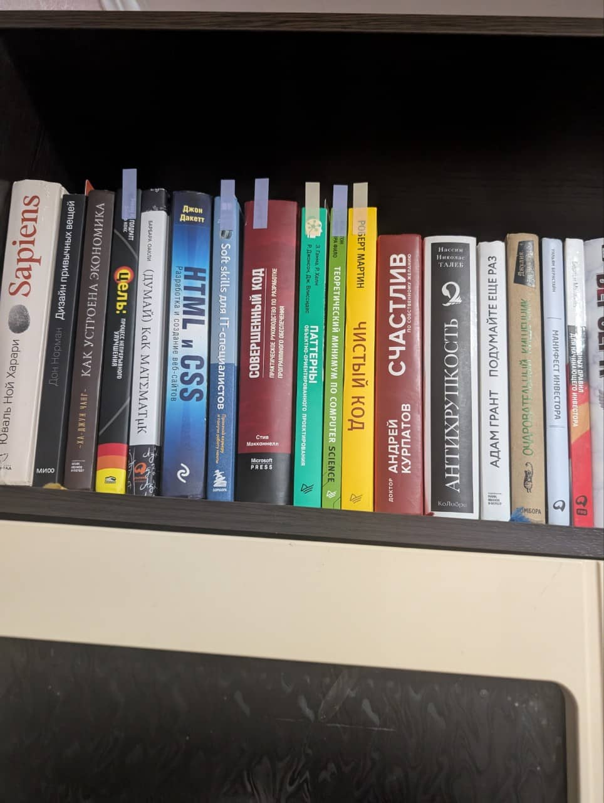

Фритрек и нулевой спринт: Подготовка к работе

переизбыток информацииЭто было самое начало пути. На этом этапе важно было проникнуться основами и настроиться на учёбу. И, возможно, подумать, как новые знания могут повлиять на ваше будущее.
В момент прохождения нулевого спринта активно изучал профессию frontend-разработчика. Тогда было страшно, сколько технологий предстоит изучить, а модуль по JavaScript вообще чуть не развернул меня. Но мне помогли и убедили, что дальше только хуже со временем и практикой знания придут.